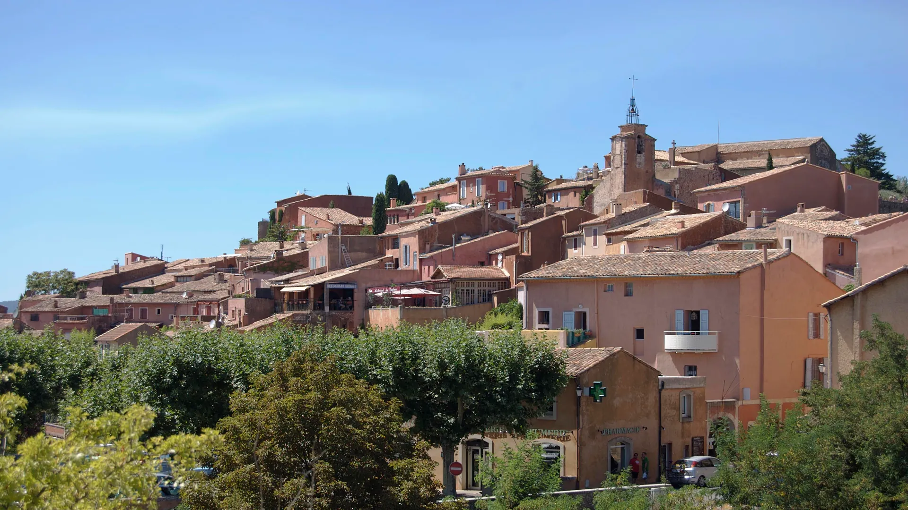
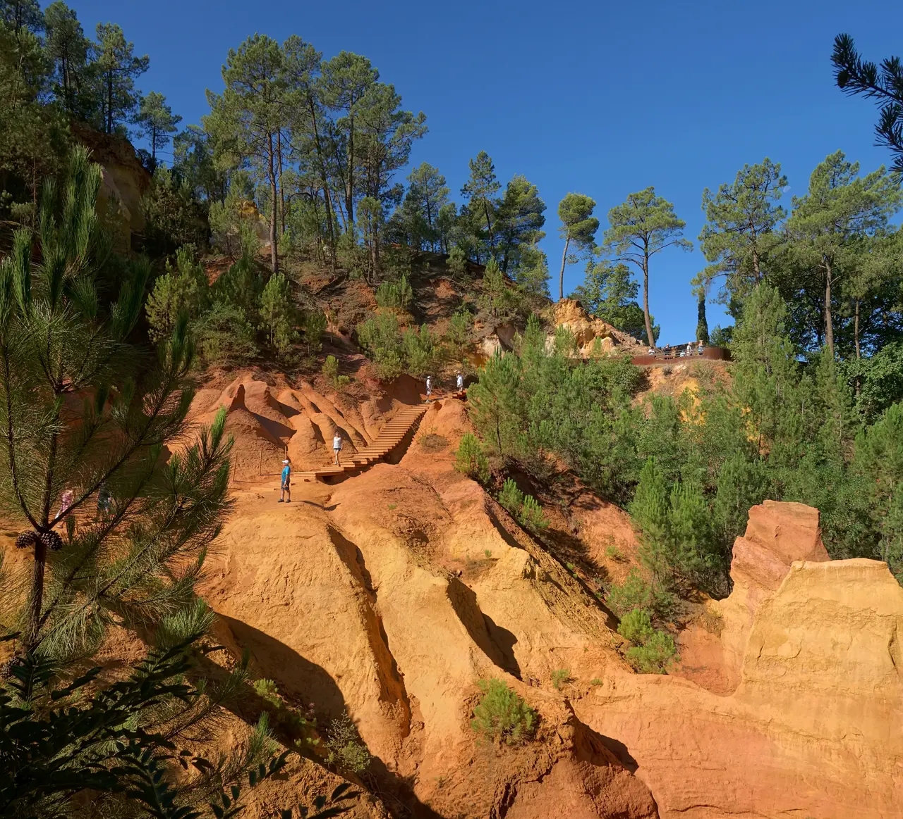

{kind=link}
{kind=link}
{kind=link}
관광·미술관
Nous avons déjà des billets.
이미 표가 있습니다.
누 자봉 데자 데 비예

백색 석회암으로 둘러싸인 전형적인 프로방스 마을들과 달리, 선명한 주황색, 핏빛 붉은색, 황금빛 노란색으로 빛나는 거대한 천연 황토(Ochre) 암반 위에 세워진 마을이다.
18세기 말 장에티엔 아스티에(Jean-Étienne Astier)가 오커에서 천연 염료를 추출하는 공정을 발명한 이후, 20세기 초까지 세계 최대의 오커 채굴지로 번성했다.
채굴이 중단된 옛 야외 채석장은 자연과 세월이 빚어낸 '오커 트레일(Le Sentier des Ocres)'이라는 환상적인 산책로로 재탄생했으며, 지중해 소나무 숲과 기괴하게 깎인 붉은 사암 절벽이 마치 지구 밖 외계 행성을 걷는 듯한 강렬한 시각적 충격을 선사한다.
"뤼베롱에서 단 하나의 자연 지형 경관을 꼽는다면 단연 루시용의 오커 트레일이다." 붉은 먼지를 뒤집어써도 되는 편한 신발을 신고 50분 순환 산책로를 걸으며 17가지 천연 황토 색조의 웅장한 침식 절벽을 감상한 뒤, 마을 정상의 벨베데레 전망대에서 파스텔톤 가옥과 뤼베롱 계곡을 내려다보는 2시간 여정이 완벽한 감동을 준다.
| 운영시간 | 9월 매일 09:30–18:30 · 퇴장 19:00 |
|---|---|
| 휴무 | 9월은 매일 운영하나 비·강풍·화재위험 등 안전상황에 따라 접근 제한 가능 |
| 요금 | 개인 성인 €3.50 |
| 예약 | 약 30–60분. 당일 기상·안전 공지를 확인하고 현장 입장 |
Day 18 첫 MUST다. 9월 공식 운영은 09:30–18:30, 19:00 퇴장이며 날씨·안전 조건에 따라 통제될 수 있어 당일 확인한다.
| 항목 | 상세 정보 |
|---|---|
| 위치 | Place de la Poste, 84220 Roussillon |
| 오커 트레일 운영 | 9월 매일 09:30–18:30, 19:00 퇴장 / 기상·안전 조건부 |
| 입장료 | 성인 €3.50, 10세 미만 무료 (현장 매표소 또는 키오스크 발권, 예약 불필요) |
| 복장/신발 주의 (필수) | 절대 흰옷이나 흰색 신발 착용 금지! 미세한 붉은 오커 흙먼지가 신발과 바짓단에 묻어 얼룩이 남음. 편안한 짙은 색 운동화 권장. 차내에 여벌 신발이나 물티슈 준비 권장 |
| 보행 제한 | 트레일 입구에 약 350개의 계단이 있어 유모차 및 휠체어 진입 불가 |
| 추천 주차장 | Parking des Ocres (트레일 입구 직결, 유료 일일권 약 €4) 또는 Parking Saint-Joseph (마을 중심 접근) |
| 마을 시장 | 매주 목요일 오전 (08:30–12:30): 광장에서 지역 농산물 및 특산품 시장 개장 |


Nous avons déjà des billets.
이미 표가 있습니다.
누 자봉 데자 데 비예
On peut prendre des photos ?
사진 찍어도 되나요?
옹 푀 프랑드르 데 포토
Où commence la visite ?
관람은 어디서 시작하나요?
우 코망스 라 비지트

Gordes 북쪽 좁은 계곡의 12세기 Cistercian 수도원. 화려함보다 절제된 로마네스크 건축과 침묵의 공간이 핵심이다.

Petit Luberon 북사면을 따라 층층이 올라가는 언덕마을. 정상의 오래된 교회에서 Lacoste와 Calavon 계곡을 바라보는 전망이 핵심이다.

뤼베롱 현지 농부들이 직접 재배하고 만든 신선 농산물과 특산품을 판매하는 생산자 직거래 일요 시장. 이번 Day 17–18 일정에는 넣지 않은 지역 참고 Place다.

바위 언덕 위에 석회암 집들이 층층이 매달린 Luberon의 대표 이미지. 진입도로 파노라마와 해질 무렵의 돌빛이 핵심이다.

대형 관광버스가 닿지 않아 뤼베롱에서 가장 고요하고 평화로운 '숨겨진 보석' 마을. 언덕 정상의 17세기 예루살렘 풍차(Moulin de Jérusalem)와 현지인들의 정겨운 일상이 살아있는 골목길.

Bonnieux 맞은편 언덕에 붙은 작은 석조마을. 중세 성벽 골목과 Marquis de Sade로 알려진 성터가 마을의 성격을 만든다.